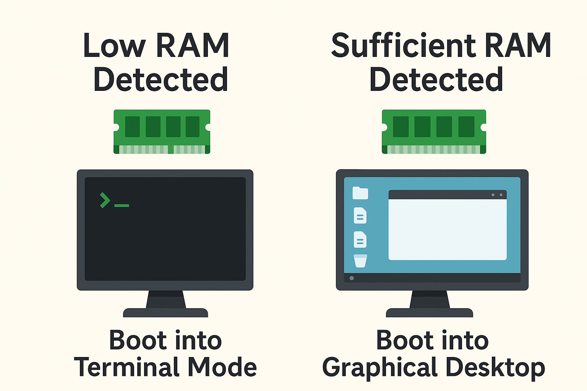

We believe security software like Kicksecure needs to remain Open Source and independent. Would you help sustain and grow the project? Learn more about our 11 year success story and maybe DONATE!

rads - Starts [no] desktop environment based on available RAM. Automatically boots into graphical desktop environment, when there is enough RAM. Or into terminal-only, when there is too little RAM. Useful inside virtual machines.
rads Default Settings

By default, Kicksecure VMs are configured with 2048 MB of virtual RAM. This can be reduced on systems with limited available resources.
- If total VM-accessible RAM is more than 480 MB, the default graphical desktop environment (DE) (LXQt) is started. (Some RAM will be reserved for the virtual hardware, so in practice one must assign more than 512 MB RAM for the desktop to start. 768 MB RAM is the minimum recommended.)
- If total VM-accessible RAM is 480 MB or less, the DE is not started.
This feature is useful for users with low RAM, as Kicksecure can still function with as little as 512 MB of RAM in a CLI-only environment.
If configuration or troubleshooting is needed, assigning 768 MB of
RAM will automatically boot into the graphical desktop environment.
Additional settings are available in the /etc/rads.d folder
to configure this feature: more RAM can be allocated (while still opting
not to start a desktop environment), different display managers can be
used, and so on. See the /etc/rads.d/30_default.conf file
for configuration examples.
rads Configuration
It is possible to prevent a desktop environment from automatically starting, regardless of how much RAM is independently assigned.
In the terminal, complete the following steps.
1. Open file /etc/rads.d/50_user.conf
in an editor with administrative ("root") rights.
1 Select your platform.
2 Notes.
- Sudoedit guidance: See Open File
with Root Rights for details on why using
sudoeditimproves security and how to use it. - Editor requirement: Close Featherpad (or the chosen text
editor) before running the
sudoeditcommand.
3 Open the file with root rights.
sudoedit /etc/rads.d/50_user.conf
2 Notes.
- Sudoedit guidance: See Open File
with Root Rights for details on why using
sudoeditimproves security and how to use it. - Editor requirement: Close Featherpad (or the chosen text
editor) before running the
sudoeditcommand. - Template requirement: When using Kicksecure-Qubes, this must be done inside the Template.
3 Open the file with root rights.
sudoedit /etc/rads.d/50_user.conf
4 Notes.
- Shut down Template: After applying this change, shut down the Template.
- Restart App Qubes: All App Qubes based on the Template need to be restarted if they were already running.
- Qubes persistence: See also Qubes Persistence
- General procedure: This is a general procedure required for Qubes and is unspecific to Kicksecure-Qubes.
2 Notes.
- Example only: This is just an example. Other tools could achieve the same goal.
- Troubleshooting and alternatives: If this example does not work for you, or if you are not using Kicksecure, please refer to Open File with Root Rights.
3 Open the file with root rights.
sudoedit /etc/rads.d/50_user.conf
2. Add the following content.
rads_start_display_manager=0
3. Save the file.
4. Done.
The procedure is now complete.
See Also
- Disable the Graphical Desktop Environment
- Advice for Systems with Low RAM
- Troubleshooting
 Kicksecure/rads
Kicksecure/rads
Categories: Documentation